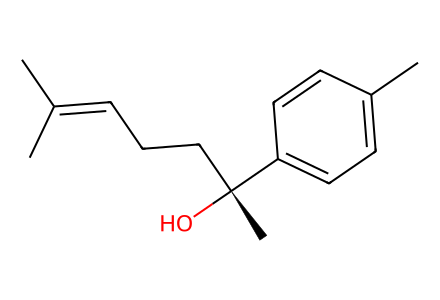
CC(C)=CCC[C@@](C)(O)c1ccc(C)cc116 个结构、7 个制备事件。目标富集样品路线 4 个事件；另保存消旋对照和 S-gossonorol 制备。各对映体分别给出 canonical isomeric SMILES，产率属于混合物整体，不伪造各组分分离产率。仅覆盖现有 SI 的目标相关制备，待独立专家复核。
完整 JSON · 逐步 CSV · 路线序列 · SDF · HRMS 核对
| 事件 | 分子连接 | 报告产率 | Canonical reaction SMILES |
|---|---|---|---|
| E01 | ketone + MeMgBr → 5R + 5S | 62% combined mixture yield | CC(C)=CCCC(=O)c1ccc(C)cc1.[Br-].[CH3-].[Mg+2]>>CC(C)=CCC[C@@](C)(O)c1ccc(C)cc1.CC(C)=CCC[C@](C)(O)c1ccc(C)cc1 |
| E02 | 5R + 5S → 6R + 6S | 53% combined mixture yield | CC(C)=CCC[C@@](C)(O)c1ccc(C)cc1.CC(C)=CCC[C@](C)(O)c1ccc(C)cc1>>CC(C)=CCC[C@@](C)(OO)c1ccc(C)cc1.CC(C)=CCC[C@](C)(OO)c1ccc(C)cc1 |
| E03 | 6R + 6S → 7 + ent-7 + 8 + ent-8 | 27% combined mixture yield | CC(C)=CCC[C@@](C)(OO)c1ccc(C)cc1.CC(C)=CCC[C@](C)(OO)c1ccc(C)cc1>>Cc1ccc([C@@]2(C)CC[C@@H](C(C)(C)OO)OO2)cc1.Cc1ccc([C@@]2(C)CC[C@H](C(C)(C)OO)OO2)cc1.Cc1ccc([C@]2(C)CC[C@@H](C(C)(C)OO)OO2)cc1.Cc1ccc([C@]2(C)CC[C@H](C(C)(C)OO)OO2)cc1 |
| E04 | 7 + ent-7 + 8 + ent-8 → 1 + ent-1 + 2 + ent-2 | 75% combined mixture yield | Cc1ccc([C@@]2(C)CC[C@@H](C(C)(C)OO)OO2)cc1.Cc1ccc([C@@]2(C)CC[C@H](C(C)(C)OO)OO2)cc1.Cc1ccc([C@]2(C)CC[C@@H](C(C)(C)OO)OO2)cc1.Cc1ccc([C@]2(C)CC[C@H](C(C)(C)OO)OO2)cc1>>Cc1ccc([C@@]2(C)CC[C@@H](C(C)(C)O)OO2)cc1.Cc1ccc([C@@]2(C)CC[C@H](C(C)(C)O)OO2)cc1.Cc1ccc([C@]2(C)CC[C@@H](C(C)(C)O)OO2)cc1.Cc1ccc([C@]2(C)CC[C@H](C(C)(C)O)OO2)cc1 |
| E05 | 6R + 6S → 7 + ent-7 + 8 + ent-8 | 40% combined mixture yield | CC(C)=CCC[C@@](C)(OO)c1ccc(C)cc1.CC(C)=CCC[C@](C)(OO)c1ccc(C)cc1>>Cc1ccc([C@@]2(C)CC[C@@H](C(C)(C)OO)OO2)cc1.Cc1ccc([C@@]2(C)CC[C@H](C(C)(C)OO)OO2)cc1.Cc1ccc([C@]2(C)CC[C@@H](C(C)(C)OO)OO2)cc1.Cc1ccc([C@]2(C)CC[C@H](C(C)(C)OO)OO2)cc1 |
| E06 | 7 + ent-7 + 8 + ent-8 → 1 + ent-1 + 2 + ent-2 | 80% combined mixture yield | Cc1ccc([C@@]2(C)CC[C@@H](C(C)(C)OO)OO2)cc1.Cc1ccc([C@@]2(C)CC[C@H](C(C)(C)OO)OO2)cc1.Cc1ccc([C@]2(C)CC[C@@H](C(C)(C)OO)OO2)cc1.Cc1ccc([C@]2(C)CC[C@H](C(C)(C)OO)OO2)cc1>>Cc1ccc([C@@]2(C)CC[C@@H](C(C)(C)O)OO2)cc1.Cc1ccc([C@@]2(C)CC[C@H](C(C)(C)O)OO2)cc1.Cc1ccc([C@]2(C)CC[C@@H](C(C)(C)O)OO2)cc1.Cc1ccc([C@]2(C)CC[C@H](C(C)(C)O)OO2)cc1 |
| E07 | acetophenone + prenylMgBr → 5R + 5S | 73% combined mixture yield | CC(=O)c1ccc(C)cc1.[Br-].[CH2-]CC=C(C)C.[Mg+2]>>CC(C)=CCC[C@@](C)(O)c1ccc(C)cc1.CC(C)=CCC[C@](C)(O)c1ccc(C)cc1 |

CC(C)=CCC[C@@](C)(O)c1ccc(C)cc1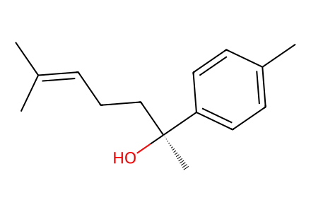
CC(C)=CCC[C@](C)(O)c1ccc(C)cc1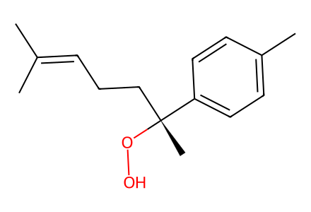
CC(C)=CCC[C@@](C)(OO)c1ccc(C)cc1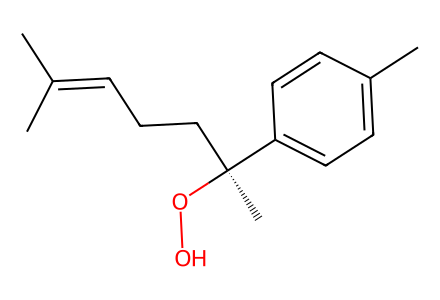
CC(C)=CCC[C@](C)(OO)c1ccc(C)cc1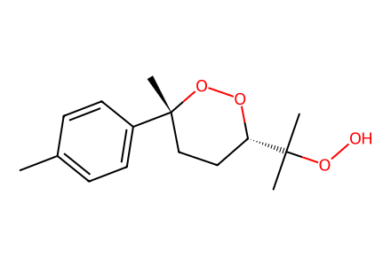
Cc1ccc([C@@]2(C)CC[C@@H](C(C)(C)OO)OO2)cc1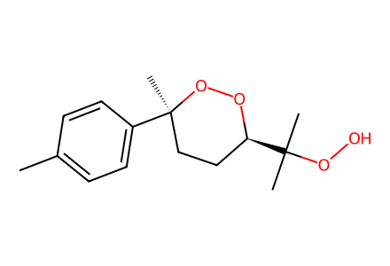
Cc1ccc([C@]2(C)CC[C@H](C(C)(C)OO)OO2)cc1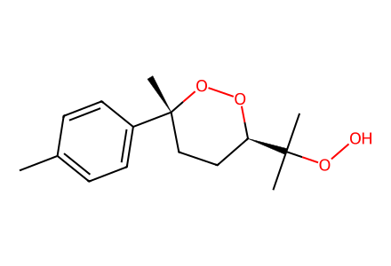
Cc1ccc([C@@]2(C)CC[C@H](C(C)(C)OO)OO2)cc1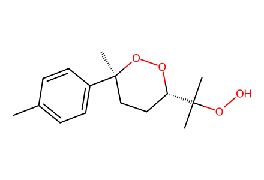
Cc1ccc([C@]2(C)CC[C@@H](C(C)(C)OO)OO2)cc1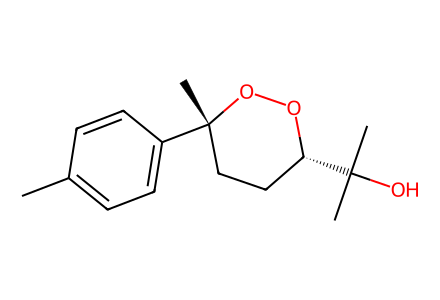
Cc1ccc([C@@]2(C)CC[C@@H](C(C)(C)O)OO2)cc1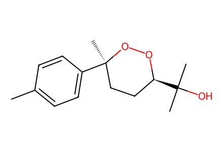
Cc1ccc([C@]2(C)CC[C@H](C(C)(C)O)OO2)cc1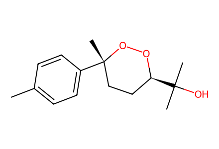
Cc1ccc([C@@]2(C)CC[C@H](C(C)(C)O)OO2)cc1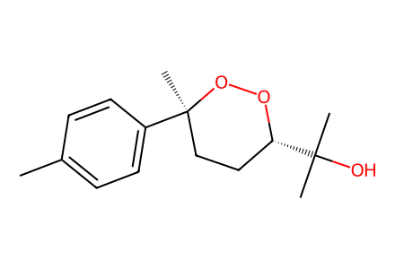
Cc1ccc([C@]2(C)CC[C@@H](C(C)(C)O)OO2)cc1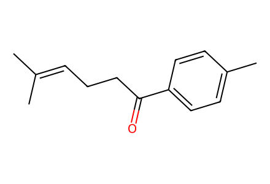
CC(C)=CCCC(=O)c1ccc(C)cc1
[Br-].[CH3-].[Mg+2]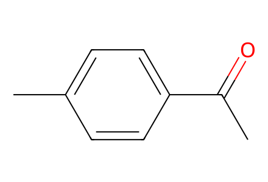
CC(=O)c1ccc(C)cc1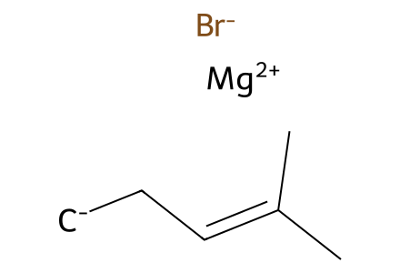
[Br-].[CH2-]CC=C(C)C.[Mg+2]